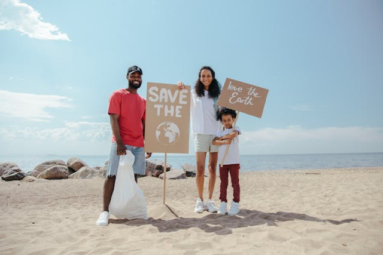
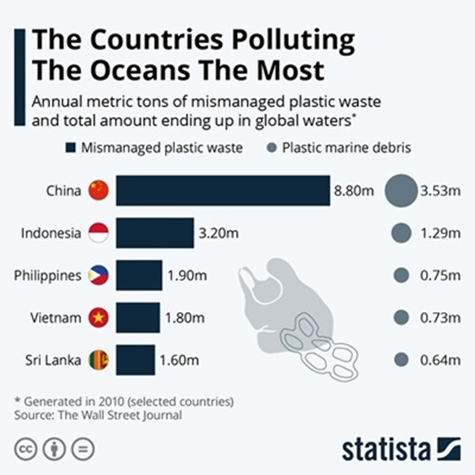

Our Vision
We envision a world where every individual can easily find and participate in volunteer opportunities that make a real difference. By bridging the gap between volunteers and communities, we aim to create a sustainable and ethical volunteer ecosystem that drives positive change.

About Us
Tides of Change is a global platform dedicated to connecting passionate volunteers with meaningful opportunities that align with their skills, interests, and availability. Our mission is to foster unity and social impact by providing a user-friendly platform where volunteers and non-profits can collaborate seamlessly.

Why is there a need for this?
A team of researcher in united states and australia led by jenna jambeck,an enviromental engineer at the university of georgia, analyzed plastic waste levels in the world's oceans.They found that china and indonesia is top source of plastic bottles,bags and other rubbish clogging up global sea lanes.Together,both nations account for more than third of plastic detritus in global waters,according to a report in the wall street journal.

Join US
Be a part of Tides of Change and contribute to a global community dedicated to making a difference. Whether you're looking to volunteer or seeking volunteers for your organization, our platform provides the tools and resources you need to create a lasting impact.
{kind=link}
{kind=link}
{kind=link}
{kind=link}
{kind=link}
{kind=link}
{kind=link}
The top 10 countries that dump the most plastic into the ocean
| Countries Name | Plastic Waste |
|---|---|
| India | 126.5 million kg of plastic |
| China | 70.7 million kg of plastic |
| Indonesia | 56.3 million kg of plastic |
| Brazil | 38 million kg of plastic |
| Vietnam | 36.7 million kg of plastic |
| Philippines | 33.7 million kg of plastic |
| Egypt | 27.7 million kg of plastic |
| Mexico | 3.5 million kg of plastic |
| Japan | 1.8 million kg of plastic |
| United Kingdom | 703 thousand kg of plastic |

India
China
Indonesia
Brazil
Vietnam
Phillippines
Mexico
Egypt
Japan
United Kingdom

Marine Debris Drive
Certified divers are invited to participate in underwater cleanup missions to remove debris from the ocean floor. This campaign aims to reduce pollution in marine habitats and raise awareness about the impacts of underwater litter.